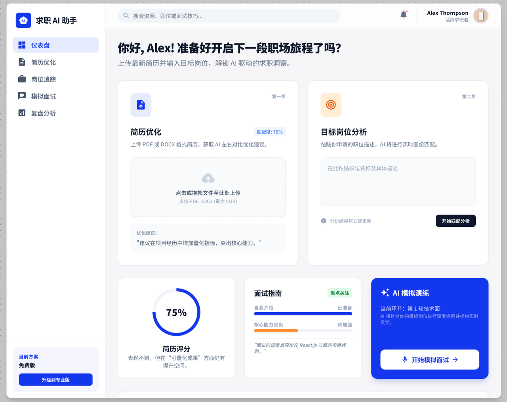
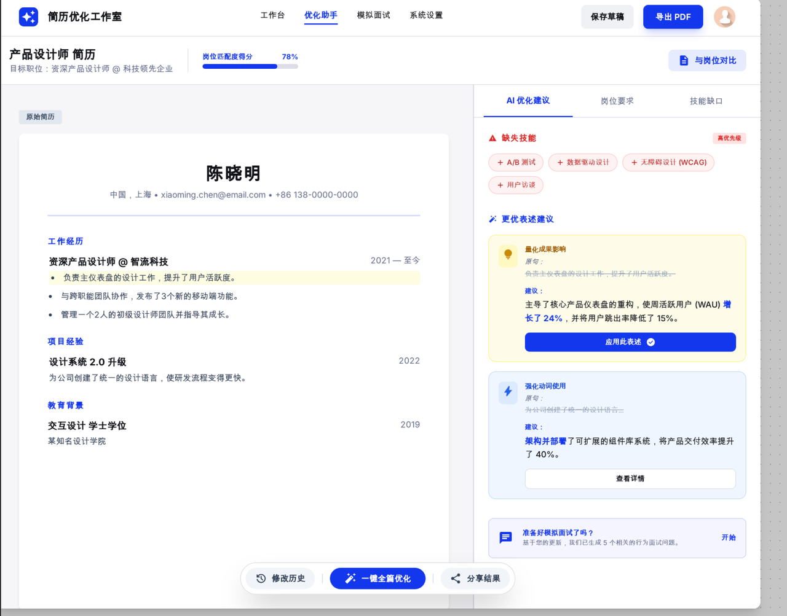
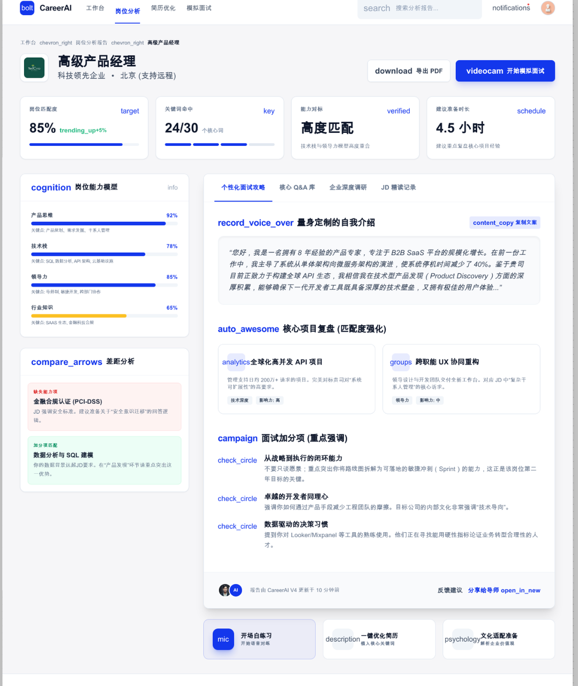
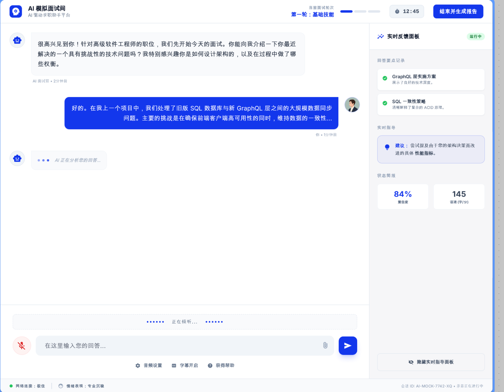
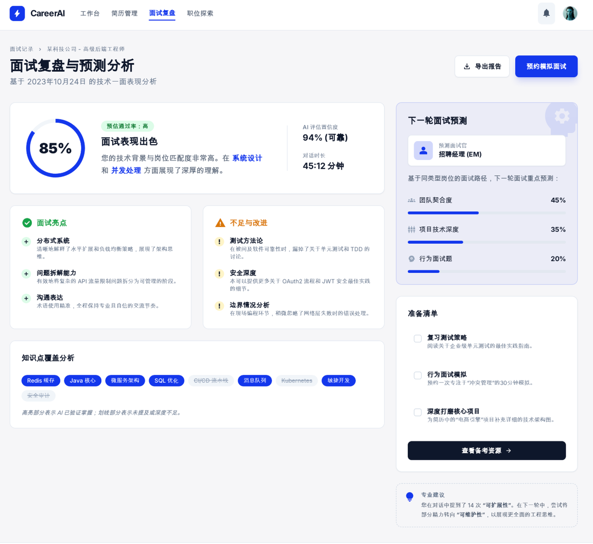

AI 膳食决策助手
痛点场景
每天面对「吃什么」的决策焦虑：选择太多、营养搭配难、时间紧张时更难兼顾健康与便利。希望通过 AI 辅助，快速给出个性化膳食建议。
从点子到产品
- 从个人日常痛点出发，将「选餐难」抽象为可被 AI 增强的决策场景
- 用大模型 + 简单逻辑完成 MVP：输入偏好、场景，输出推荐方案
- 选择轻量部署方式（如 Bolt）快速上线，验证核心价值
将课程学习内容融会贯通，制作公网可访问的网页，作为课程毕业名片
课程毕业名片展示发现的痛点场景、MVP 产品，分享从点子到产品的挖掘思路。
每天面对「吃什么」的决策焦虑：选择太多、营养搭配难、时间紧张时更难兼顾健康与便利。希望通过 AI 辅助，快速给出个性化膳食建议。

仪表盘

简历优化

岗位分析

AI 模拟面试

面试复盘
求职者在找工作时面临多重挑战：简历优化、选择目标岗位、分析岗位技能、准备面试内容、面试后复盘总结。尤其对于转行或久未面试的群体，面对不断变化的求职市场，更需要一个专业助手——能智能分析岗位、结合个人简历和项目经验有针对性地准备面试、预测面试问题，并最好能进行模拟面试演练。
正在找工作的人。产品目标是为用户提供有针对性的简历优化建议和面试技巧，帮助他们快速高效地找到目标岗位。
写下这几天的 AI 编程心得与收获，给其它伙伴可以参考的 AI 学习路径。
这几天最大的收获是：从「用 AI 工具」到「用 AI 做产品」的思维方式转变。不再只是写 Prompt，而是把需求拆解成可被 AI 增强的模块，再选择合适的模型、平台和交互方式。例如膳食助手，就是把「选餐决策」拆成：输入理解、偏好匹配、推荐生成，每一步都可以用大模型来增强。
快速验证想法比完美实现更重要。用 Bolt、Coze 等低代码/无代码平台，能在很短时间内把点子变成可体验的 Demo，这对产品经理来说非常友好。同时，多动手做小项目，比只看教程更能加深对大模型能力边界和局限的理解。